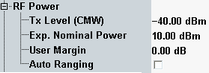

The parameters in this section provide the general power settings.

Defines the power level transmitted by the R&S CMW
Remote command:Sets the analyzer in accordance with the nominal power of the RF signal to be measured. The nominal power is the average output power at the EUT during the measurement intervals where the RF transmitter is on. The "Ref. Level" is calculated as the expected peak power at the output of the EUT:
Reference level = Expected Nominal Power + User Margin
The actual input power at the connectors is equal to the "Reference Level" minus the "External Attenuation (Input)" value, if all power settings are configured correctly. The actual input power must be within the level range of the selected RF input connector; refer to the data sheet.
This setting is ignored, if "Auto Ranging" is enabled.
Remote command:Margin that the R&S CMW adds to the "Expected Nominal Power" to determine its reference power ("Ref. Level"). The "User Margin" is typically used to account for the known variations of the RF input signal power, e.g. the variations due to a specific channel configuration.
A user margin of 3 dB is appropriate for the supported packet types.
Remote command:Adjusts the input level expected at the R&S CMW antenna automatically, according to the predefined values and measured signal amplitude. If enabled, the setting of "Exp. Nominal Power" is ignored.
Remote command: